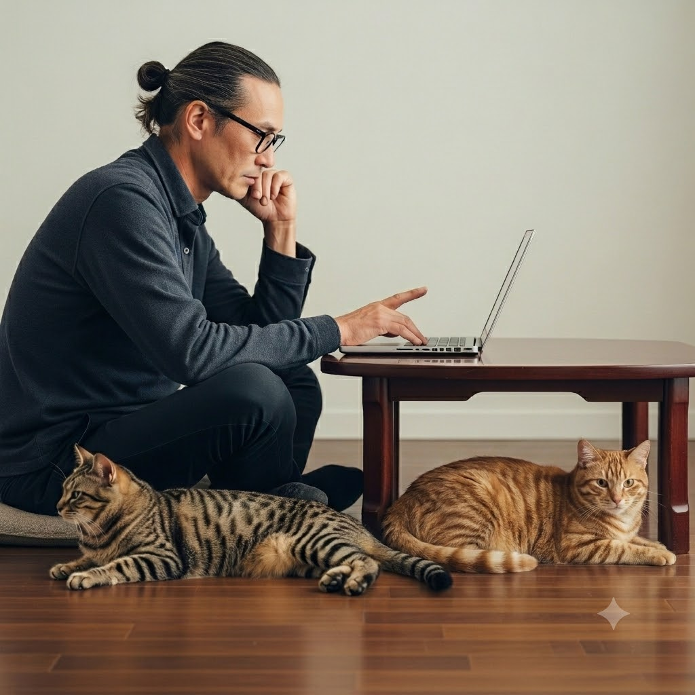

身体を動かすモノづくりから、画面のモノづくりへ
かつての私は、電気工事士として現場に立ち、その後は食品製造工場で設備管理や生産ライン業務に携わっていた。 機械の構造を理解し、不具合の原因を突き止め、自分の手で改善していく。そんな現場のモノづくりに大きなやりがいを感じていた。
しかし、病気と大怪我によって身体に障害を負い、これまでのような肉体労働を続けることが難しくなった。 一時は介護の資格取得にも挑戦したが、現実的には身体を使う仕事への復帰は困難だった。
それでも、「構造を理解し、何かを作り上げる仕事がしたい」という思いだけは消えなかった。 身体に負担をかけず、頭と手を使って挑戦できるモノづくりを探し続けた結果、たどり着いたのがWeb制作だった。
48歳からの、ゼロからの挑戦である。
異国の言葉だったコードと反復学習の日々
学習を始めた当初、HTMLやCSSはまるで異国の言葉だった。 IT業界とは無縁の環境で働いてきたため、画面に並ぶ英単語や記号の意味がまったく理解できなかった。
また、障害の影響によりタイピングは左手と右手中指一本で行っている。 人より入力速度は遅いが、それを言い訳にはしたくなかった。 覚えるのが遅いなら、その分繰り返せばいい。そう考え、職業訓練と並行して毎日学習を続けた。
Progateで基礎を学び、その後はCodeJumpなどのコーディング課題に取り組んだ。 同じ課題を何度も繰り返す中で、最初は暗号のように見えていたコードが少しずつ意味を持つようになっていった。
なぜこのタグを使うのか。 なぜこのCSSが必要なのか。
構造を理解しながら組み立てていくコーディングの作業は、かつて図面を見ながら設備を組み上げていた頃の感覚と驚くほど似ていた。
積み上げた20作品以上の制作経験
地道な継続の結果、これまでに制作した模写・コーディング課題は20作品を超えた。 制作したコードはGitHubに公開し、自分自身の成長記録として残している。
現在は模写だけでなく、オリジナルサイトの制作にも取り組んでいる。 ポートフォリオサイトや架空クライアントを想定したランディングページ制作などを通じて、設計から実装まで挑戦を続けている。
また、英語学習アプリ「Duolingo」を一年以上継続し、中学レベルの英語を学び直した。 その結果、コードの理解や学習効率も以前より向上したと感じている。
AIによるコード生成が急速に進化している現在だからこそ、コードを理解する力の重要性はますます高まっていると考えている。
AIが生成したコードを正しく評価し、改善し、不具合を発見できる力は人間にしか持てない。 私は道具に頼り切るのではなく、道具を使いこなせる制作者でありたいと思っている。
これからも学び続けるために
48歳からのスタートは決して早くはない。 身体のハンディキャップもある。
それでも、これまでの人生で培ってきた継続力や誠実さには自信がある。 日々の学習、資格取得への挑戦、ブログや動画による発信など、小さな積み重ねを続けてきた。
Web制作の世界は学ぶべきことが尽きない。 だからこそ面白く、挑戦し続ける価値があると感じている。
これからも学習と制作を継続しながら、信頼されるWeb制作者を目指して一歩ずつ成長していきたい。